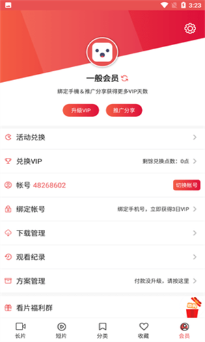

lutube 从零上手：装包、找片、缓存、会员全流程带一遍
这篇实战教程带你从零把 lutube 装到手机上，走完初次启动到缓存离线、兑换会员的完整路径，新手最容易翻车的几个卡点也一并讲透。
读完这篇，你能在手机上把 lutube 装起来、基本功能玩通，会员体系也能搞明白。全程不绕弯，跟着做一遍就行。
准备：两件事先搞定
lutube 是一款专注在线影音播放的 Android 应用，功能集中、上手快——lutube官网上也有产品介绍和版本更新通知。平台是 Android，iOS 用户不用往下看。动手前先确认两件事：
一是安装包来源要靠谱——来源和包名都得核对，别随便找个来历不明的 APK 就装。二是手机得允许装未知来源应用，这个开关在系统设置里，一般在「安全」或「应用管理」板块，找不到就系统设置里搜「未知来源」。

准备好就往下走。
第一步：装包并启动
打开浏览器，去官方下载把 APK 下到本地。下完直接点开——系统会弹未知来源的安全提示，确认允许就行，这就是刚才那步准备的意义。
安装完成点「打开」，首次启动会申请几个权限：网络访问、存储读写、Wi-Fi 状态、安装包请求，这四个是正常的，影音应用离不开它们。一个一个点允许，要是弹了短信、通讯录、精确定位之类的权限，停手核对一下安装包，别乱给。
进应用之后先别慌着找片，底部五个标签先过一遍：长片、短片、分类、收藏、会员——从左到右，前两个是内容，中间两个是找片工具，最后一个管账号。所有功能都挂在这五根柱子上，先建立这个地图，后面每一步都不会迷路。
第二步：找片与播放
第一次打开默认停在长片栏，就是电影电视剧那堆正片。短片栏是轻量短内容，刷着玩的。
新手最容易犯的错是只在长片栏里上下翻——分类标签才是效率工具。分类里按类型横向筛全部内容，比在长片栏一页页翻快得多。搜片技巧配合着用，先搜后筛，找片速度能快一个量级。
找到想看的片子，点进去直接播。播放中轻点屏幕唤出控制条，底部有个倍速按钮，点开能选档位，一般 0.5 倍到 2 倍左右，选中即生效。赶进度看剧的话 1.25 到 1.5 倍合适，对话为主的剧集丢进去刚好，动作片悬疑片别开太快，音画细节会丢。
手势也可以直接控制：进度条区域左右滑动快进快退，屏幕侧边上下滑动调亮度或音量，轻点中部呼出或收起控制条。手势分区不同版本可能有差异，以实际反馈为准。
第三步：缓存到本地慢慢看
网络一般的时候，倍速看片缓冲消耗很快，建议先把片子缓存下来再看。缓存管理在会员标签里，进去能看到已缓存的影片列表，支持本地回放不耗流量。

缓存之前最好确认一下存储权限已经给过了，没给的话系统会再弹一次。缓存完断网也能看，出差在外或者 Wi-Fi 不靠谱的场景特别实用。
第四步：会员与兑换
会员标签不只是充钱页，它同时是半个个人中心——账号 ID、下载管理、观看记录、兑换绑定的入口都收在这页。

兑换码流程走一遍：进会员标签，找到活动兑换入口，旁边会显示剩余兑换点数，点进去在输入框贴码提交，返回会员身份区核对会员天数有没有到账。码有有效期，有的换一天 VIP 有的换半天，具体面额和时效以兑换时实际结果为准。
没有码也能攒兑换点数：推广分享点数本身就能兑，绑定手机号还有一次性奖励，这两条路子不需要外部渠道——详细兑换规则在lutube文档里也有完整说明。
新手最容易翻车的三个卡点
第一个：装不上。八成是没开未知来源开关，回到准备那步把开关打开。也可能是安装包来源不对，包名核对一下。
第二个：兑了码没到账。别慌着以为被坑了，返回会员页重新进一次看会员天数有没有变化——有时候显示有延迟。还是没有的话按应用内方案管理的反馈路径走。
第三个：只在长片栏翻找不到想看的。停下来，用分类和搜索。长片栏是给你随便逛的，真要找特定片子，分类筛选加搜索才是正经路子。
进阶可以继续玩
缓存管理里支持断点续看，观看记录也走会员标签的入口能回溯。绑定手机号是可选的，代价是涉及手机号信息，不绑定的话换版时账号数据容易丢。整体用下来，这应用的功能都围绕影音播放这一件事展开，没有花里胡哨的额外负担，上手门槛不高，把这四步走完基本就能用得很顺了。顺便提一句，这套应用的整理资料同时托管在三个代码仓库，内容一致挑平台习惯就行——主版本在GitHub，国内访问更稳的Gitee，还有一份镜像放GitCode。